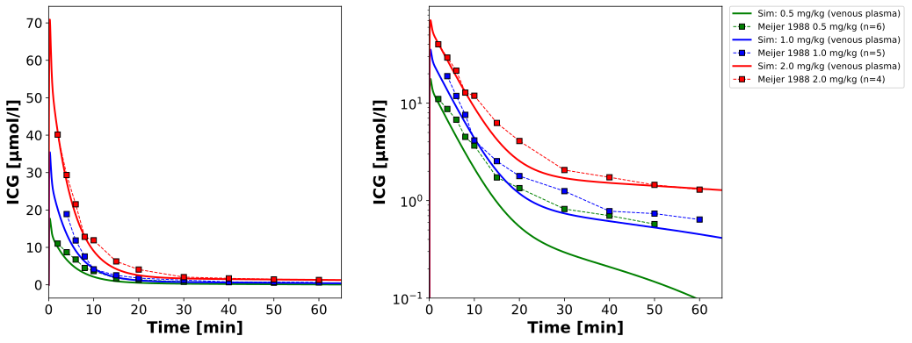
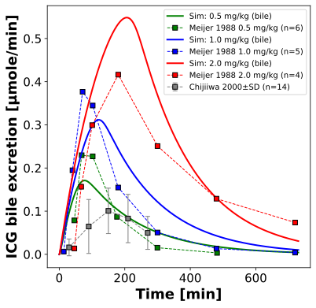
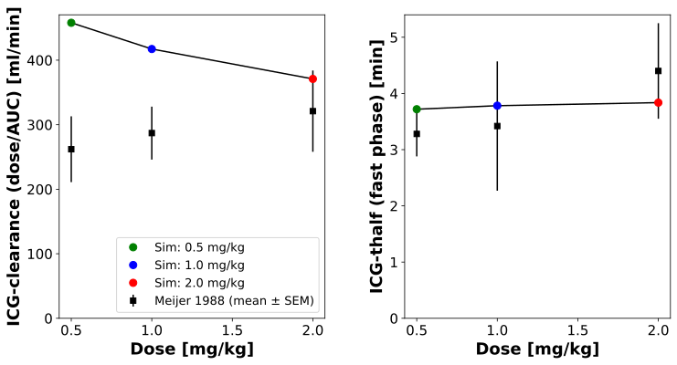

Overview
Models
| model | source |
|---|---|
| model | icg_body_flat.xml |
Datasets
Figures (3)






Code
"""Simulation experiment of the study Meijer1988."""
from dataclasses import replace
from typing import ClassVar, override
import numpy as np
import pandas as pd
from matplotlib import pyplot as plt
from pkpdsim.metadata import (
ApplicationForm,
DataType,
Dosing,
Fasting,
Health,
PKPDData,
PKPDMappingMetaData,
Route,
Tissue,
)
from sbmlsim import Q
from sbmlsim.data import DataSet
from sbmlsim.fit import FitData, FitMapping
from sbmlsim.plot import Axis, Figure
from sbmlsim.plot.serialization_matplotlib import FigureMPL
from sbmlsim.simulation import Simulation
from sbmlsim.units import Quantity
from pkdb_models.models.icg.experiments.base_experiment import ICGSimulationExperiment
from pkdb_models.models.icg.icg_pk import summarize
class Meijer1988(ICGSimulationExperiment):
"""Simulation experiment of Meijer1988.
Plasma concentrations and biliary excretion of indocyanine green after
intravenous doses of 0.5, 1.0 and 2.0 mg/kg in 15 patients on the third day
after a cholecystectomy, with a drain in the common bile duct (normal liver
and renal function and bilirubin; with the biliary excretion of
Chijiiwa2000). The plasma (Fig 2) is sampled at 2, 4, 6, 8, 10, 15, 20, 30,
40, 50 and 60 min (the times of the copy are these nominal times), the bile
(Fig 3) in periods of 30 min, 2 h and 4 h; both figures show geometric
means. Table 2: the clearance (dose over the AUC to infinity) and the
half-life of the fast phase (mean and SEM).
"""
doses: ClassVar[list[float]] = [0.5, 1.0, 2.0] # [mg/kg]
bodyweights: ClassVar[list[float]] = [62.167, 63.8, 70] # [kg]
colors: ClassVar[list[str]] = ["green", "blue", "red"]
# [min] the start of the secondary phase of the plasma curves (the
# half-life of the secondary phase is the regression from 30 min on)
secondary_start: ClassVar[float] = 20.0
@override
def datasets(self) -> dict[str, DataSet]:
dsets = {}
for fig_id in ["Fig2", "Fig3"]:
for substance, df in self.load_dataframes_by_substance(fig_id).items():
dset = DataSet.from_df(df, self.ureg)
for dose in self.doses:
dsets[self.to_sid(f"{fig_id}_{substance}_{dose}")] = dset[
dset.group == f"ICG{dose}"
]
# the two phases of the plasma curves, which differ by one to two
# orders of magnitude: a curve is fitted relative to its mean, the
# secondary phase is fitted on its own scale
for dose in self.doses:
dset = dsets[self.to_sid(f"Fig2_indocyanine green_{dose}")]
secondary = dset.time > self.secondary_start
dsets[self.to_sid(f"Fig2_icg_{dose}_fast")] = dset[~secondary]
dsets[self.to_sid(f"Fig2_icg_{dose}_secondary")] = dset[secondary]
# Tab2 has the clearance (dose/AUC, the CL of Table 2 in the copy; the
# value of pkdb_data is CL12), the half-life of the fast phase, the
# maximum excretion rate and the biliary recovery after 18 hr (in
# percent at 18 hr, the fix of pkdb_data#2490 in the copy), each in its
# unit; a data set holds the rows of one measurement type (sbmlsim reads
# a column in one unit), without the columns they have no value in (the
# time of the recovery)
for df in self.load_dataframes_by_substance("Tab2").values():
for key, measurement_type in [
("Tab2_ICGcl", "clearance"),
("Tab2_ICGthalf", "thalf"),
]:
rows = df[df.measurement_type == measurement_type]
dsets[key] = DataSet.from_df(rows.dropna(axis=1, how="all"), self.ureg)
# biliary excretion of Chijiiwa2000
bodyweight = Q(75, "kg")
dframes_chijiiwa = self.load_dataframes_by_substance(
"Fig1", study="Chijiiwa2000"
)
for substance, df in dframes_chijiiwa.items():
if substance == "indocyanine green":
dset = DataSet.from_df(
df[df.measurement == "excretion rate"], self.ureg
)
dset.unit_conversion("mean", bodyweight / self.Mr.icg)
dsets["Chijiiwa2000_excretion_rate"] = dset
return dsets
@override
def simulations(self) -> dict[str, Simulation]:
# the timecourses of 12 h (the bile), resolved to 0.1 min for the
# plasma of the first minutes and the area under the curve
return {
self.to_sid(f"icg_iv_{dose}"): Simulation(
time_unit="min",
end=12 * 60 + 10,
preinit_changes={
**self.default_changes(),
"IVDOSE_icg": Q(dose * bodyweight, "mg"),
"BW": Q(bodyweight, "kg"),
},
)
for dose, bodyweight in zip(self.doses, self.bodyweights, strict=True)
}
@override
def fit_mappings(self) -> dict[str, FitMapping]:
# the patients had a cholecystectomy and a drain in the common bile
# duct, with normal liver function: the only dose resolved data of the
# biliary excretion, training data by name. The plasma curve is split
# into the fast phase (to 20 min) and the slow secondary phase (30 -
# 60 min, the reflux and the export at low hepatic concentrations of
# the model), each a mapping: the residuals of a curve are relative to
# its mean, so the secondary phase would not enter a fit of the whole
# curve.
metadata = PKPDMappingMetaData(
tissue=Tissue.PLASMA,
route=Route.IV,
application_form=ApplicationForm.SOLUTION,
dosing=Dosing.SINGLE,
health=Health.CHOLECYSTECTOMY,
fasting=Fasting.NR,
data=PKPDData.PK,
data_type=DataType.MEAN,
)
mappings = {}
for dose in self.doses:
for suffix, phase in [("", "fast"), ("_secondary", "secondary")]:
mappings[self.to_sid(f"fm_Cve_icg_{dose}{suffix}")] = FitMapping(
self,
reference=FitData(
self,
dataset=self.to_sid(f"Fig2_icg_{dose}_{phase}"),
xid="time",
yid="mean",
count="count",
),
observable=FitData(
self,
task=self.to_sid(f"task_icg_iv_{dose}"),
xid="time",
yid="[Cve_icg]",
),
metadata=metadata,
)
# the excretion rate of the periods of collection (30 min, after
# 2 h periods of 2 h and 4 h) is compared with the rate of the model
mappings[self.to_sid(f"fm_LI__ICGLI2BI_{dose}")] = FitMapping(
self,
reference=FitData(
self,
dataset=self.to_sid(f"Fig3_indocyanine green_{dose}"),
xid="time",
yid="mean",
count="count",
),
observable=FitData(
self,
task=self.to_sid(f"task_icg_iv_{dose}"),
xid="time",
yid="LI__ICGLI2BI",
),
metadata=replace(metadata, tissue=Tissue.BILE),
)
return mappings
@override
def figures(self) -> dict[str, Figure]:
return {
"fig_plasma": self._figure_plasma(),
"fig_bile": self._figure_bile(),
}
def _figure_plasma(self) -> Figure:
"""Plasma concentrations, Fig 2 (linear and logarithmic)."""
fig = Figure(
experiment=self,
sid="Fig2",
num_cols=2,
width=12,
height=6,
settings={"legend_scope": "row"},
)
plots = fig.create_plots(
xaxis=Axis("Time", unit=self.unit_time, min=0, max=65), legend=True
)
plots[0].set_yaxis("ICG", self.unit_icg)
plots[1].set_yaxis("ICG", self.unit_icg, scale="log", min=0.1)
for plot in plots:
for dose, color in zip(self.doses, self.colors, strict=True):
plot.add_data(
task=self.to_sid(f"task_icg_iv_{dose}"),
xid="time",
yid="[Cve_icg]",
label=f"Sim: {dose} mg/kg (venous plasma)",
color=color,
)
plot.add_data(
dataset=self.to_sid(f"Fig2_indocyanine green_{dose}"),
xid="time",
yid="mean",
count="count",
color=color,
label=f"Meijer 1988 {dose} mg/kg",
)
return fig
def _figure_bile(self) -> Figure:
"""Biliary excretion rate, Fig 3 (with Chijiiwa2000)."""
fig = Figure(experiment=self, sid="Fig3", width=6, height=6)
plots = fig.create_plots(xaxis=Axis("Time", unit=self.unit_time), legend=True)
plots[0].set_yaxis("ICG bile excretion", self.unit_bile_rate)
for dose, color in zip(self.doses, self.colors, strict=True):
plots[0].add_data(
task=self.to_sid(f"task_icg_iv_{dose}"),
xid="time",
yid="LI__ICGLI2BI",
label=f"Sim: {dose} mg/kg (bile)",
color=color,
)
plots[0].add_data(
dataset=self.to_sid(f"Fig3_indocyanine green_{dose}"),
xid="time",
yid="mean",
count="count",
color=color,
label=f"Meijer 1988 {dose} mg/kg",
)
plots[0].add_data(
dataset="Chijiiwa2000_excretion_rate",
xid="time",
yid="mean",
yid_sd="mean_sd",
count="count",
color="grey",
label="Chijiiwa 2000",
)
return fig
@override
def figures_mpl(self) -> dict[str, FigureMPL]:
self.pk_dfs = self.calculate_icg_pk()
return {**self._figure_pk()}
def _pk_band(
self, df: pd.DataFrame, key: str, unit: str
) -> tuple[Quantity, Quantity | None, Quantity | None]:
"""Get a parameter of a simulation, the median and the band of the draws.
Returns:
The value (the median of the draws in a run over them), and the
lower and the upper quantile, `None` without draws.
"""
source = df[f"{key}_unit"].iloc[0]
run = self.uncertainty
if run is None:
return Q(df[key].to_numpy(dtype=float), source).to(unit), None, None
summary = summarize(df, key, run.quantiles)
median, lower, upper = (
Q(summary[column].to_numpy(), source).to(unit)
for column in ["median", "lower", "upper"]
)
return median, lower, upper
def _figure_pk(self) -> dict[str, FigureMPL]:
"""Clearance and half-life of the fast phase vs dose, Table 2.
The clearance of the paper is the dose over the AUC to infinity, the
clearance of the non-compartmental analysis of the 12 h simulation
(`cl`); the half-life of the fast phase of the biexponential fit is
compared with the half-life of the regression of 2 - 15 min
(`thalf_kel`).
"""
f, axes = plt.subplots(nrows=1, ncols=2, figsize=(12, 6))
f.subplots_adjust(wspace=0.3)
panels = [
("cl", "ml/min", "Tab2_ICGcl", "ICG-clearance (dose/AUC)"),
("thalf_kel", "min", "Tab2_ICGthalf", "ICG-thalf (fast phase)"),
]
for ax, (key, unit, dset_key, label) in zip(axes, panels, strict=True):
ax.set_xlabel("Dose [mg/kg]", fontdict=self.font)
ax.set_ylabel(f"{label} [{unit}]", fontdict=self.font)
ax.tick_params(axis="both", labelsize=self.tick_font_size)
values = []
for dose, color in zip(self.doses, self.colors, strict=True):
df = self.pk_dfs[self.to_sid(f"icg_iv_{dose}")]
value, lower, upper = self._pk_band(df, key, unit)
yerr = (
None
if lower is None or upper is None
else np.array(
[
value.magnitude - lower.magnitude,
upper.magnitude - value.magnitude,
]
)
)
ax.errorbar(
[dose],
value.magnitude,
yerr=yerr,
marker="o",
linestyle="",
color=color,
ms=8,
label=f"Sim: {dose} mg/kg",
)
values.append(float(value.magnitude[0]))
ax.plot(self.doses, values, linestyle="-", color="black", zorder=0)
# data: the dose of a group is in its name (ICG0.5, ...)
dset = self._datasets[dset_key]
doses = dset["group"].str.removeprefix("ICG").astype(float)
ax.errorbar(
doses.to_numpy(),
dset.get_quantity("mean").to(unit).magnitude,
yerr=Q(dset["mean_se"].to_numpy(), dset["mean_unit"].iloc[0])
.to(unit)
.magnitude,
marker="s",
linestyle="",
color="black",
label="Meijer 1988 (mean ± SEM)",
)
ax.set_ylim(bottom=0)
axes[0].legend(fontsize=self.legend_font_size, loc="lower right")
return {"fig_pk": f}